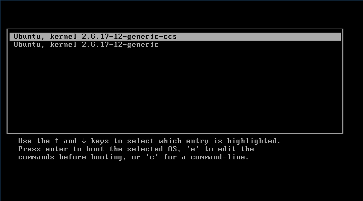
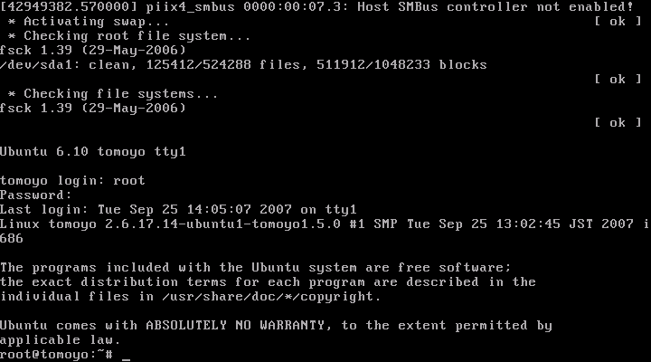
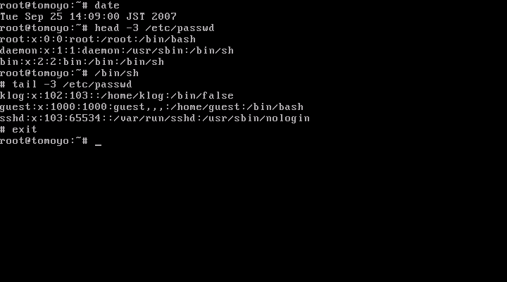
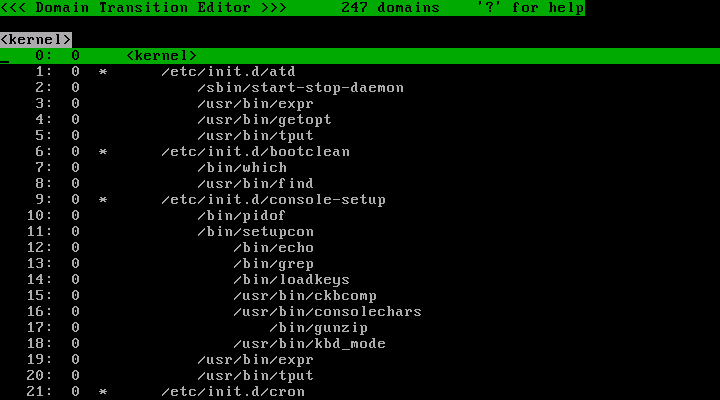
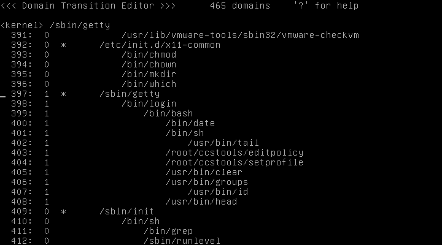
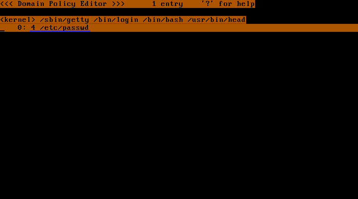
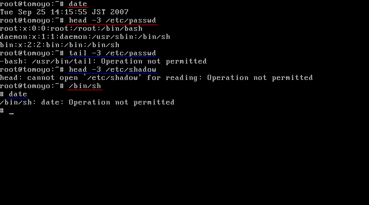

This page explains you how to introduce TOMOYO Linux 1.5.4 on Ubuntu 6.10 systems. By operating along with this page, you will be able to experience the fundamental functionalities of TOMOYO Linux and configure and operate TOMOYO Linux.
The following is the flow of introduction.
TOMOYO Linux is provided in the form of patches to the Linux kernels, and you need to apply these patches and compile. But regarding Ubuntu 6.10, a binary kernel package is and this page uses it.
First, download the binary kernel package.
# wget http://osdn.dl.sourceforge.jp/tomoyo/27437/linux-image-2.6.17-12-generic-ccs1.5.4_2.6.17.1-12.44_i386.deb # wget http://osdn.dl.sourceforge.jp/tomoyo/27437/linux-restricted-modules-2.6.17-12-generic-ccs1.5.4_2.6.17.9-12.4_i386.deb
Next, install the downloaded package.
# dpkg -i linux-image-2.6.17-12-generic-ccs1.5.4_2.6.17.1-12.44_i386.deb linux-restricted-modules-2.6.17-12-generic-ccs1.5.4_2.6.17.9-12.4_i386.deb
The following entry is appended to /boot/grub/menu.lst if installation finishes successfully.
title Ubuntu, kernel 2.6.17-12-generic-ccs root (hd0,0) kernel /boot/vmlinuz-2.6.17-12-generic-ccs root=/dev/sda1 ro quiet splash locale=ja_JP initrd /boot/initrd.img-2.6.17-12-generic-ccs quiet savedefault boot
Comment out the "timeout=" line of /boot/grub/menu.lst so that you will not fail to select TOMOYO Linux's kernel.
To make prompt shown by /sbin/ccs-init and login programs visible, remove "splash" option from the "kernel" line.
#timeout=5
Next, you need to install TOMOYO Linux tools. The TOMOYO Linux tools include programs for managing TOMOYO Linux's policy.
A binary tools package is provided and this page uses it.
# wget http://osdn.dl.sourceforge.jp/tomoyo/27437/ccs-tools_1.5.4-1_Ubuntu6.10_i386.deb # dpkg -i ccs-tools_1.5.4-1_Ubuntu6.10_i386.deb
Tools are installed in /usr/lib/ccs directory.
You have installed TOMOYO Linux. Now proceed to configuration.
A script is included in the tools package that performs configurations in this chapter. Run the script as follows.
# init_policy.sh --file-only-profile
The execution of init_policy.sh may take long time (more than 10 minutes in some environment).
The default directory for storing TOMOYO Linux's configuration is /etc/ccs/ .
Since TOMOYO Linux has much functionality, you can selectively enable/disable them using "profiles". All profiles are stored in a single file /etc/ccs/profile.conf and you can switch profiles assigned to domains.
Since this page explains only MAC for files, the contents of /etc/ccs/profile.conf will contain the following entries.
0-COMMENT=-----DISABLED_MODE----- 0-MAC_FOR_FILE=0 0-TOMOYO_VERBOSE=0 1-COMMENT=-----LEARNING_MODE----- 1-MAC_FOR_FILE=1 1-TOMOYO_VERBOSE=0 2-COMMENT=-----PERMISSIVE_MODE----- 2-MAC_FOF_FILE=2 2-TOMOYO_VERBOSE=1 3-COMMENT=-----ENFORCE_MODE----- 3-MAC_FOR_FILE=3 3-TOMOYO_VERBOSE=1
The syntax of an entry of /etc/ccs/profile.conf is shown below.
$profile_number-$topic_name=$control_mode
The leading integer ($profile_number) is the number of profile, the followed word before = ($topic_name) is the name of functionalities and the trailing integer after = ($control_mode) is the control mode.
The $topic_name = COMMENT is just for administrators.
The $topic_name = MAC_FOR_FILE means "MAC for file accesses", and the $control_mode = 0 means disabled, 1 means learning mode, 2 means permissive mode, 3 means enforcing mode.
The $topic_name = TOMOYO_VERBOSE means whether policy violation messages are printed to console or not, and prints if $control_mode = 1 and doesn't print if $control_mode = 0.
The above example has 4 profiles (from 0 to 3), and the purpose of them are shown below.
| profile 0 | Don't apply MAC for file accesses. Don't print policy violation messages on console. |
|---|---|
| profile 1 | Apply MAC for file accesses using learning mode. Don't print policy violation messages on console. |
| profile 2 | Apply MAC for file accesses using permissive mode. Print policy violation messages on console. |
| profile 3 | Apply MAC for file accesses using enforcing mode. Print policy violation messages on console. |
The basic procedure is, generate policy using learning mode (which is defined in profile 1), confirm policy using permissive mode (which is defined in profile 2), and enforce policy using enforcing mode (which is defined in profile 3).
Programs that can update policies are listed in /etc/ccs/manager.conf . The following programs are listed.
/usr/lib/ccs/loadpolicy /usr/lib/ccs/editpolicy /usr/lib/ccs/setlevel /usr/lib/ccs/setprofile /usr/lib/ccs/ld-watch /usr/lib/ccs/ccs-queryd
/etc/ccs/exception_policy.conf contains the following 7 types of exceptions.
TOMOYO Linux has two types of logs, "access granted logs" (access requests that didn't violate domain policy) and "access rejected logs" (access requests that violated domain policy). This page configures to save only "access rejected logs".
To save logs, you can use "ccs-auditd" daemon program included in ccs-tools package. To start "ccs-auditd" on bootup to save only "access rejected logs", create the following script in the /etc/init.d/ directory and give execute permission to the script.
# cat > /etc/init.d/ccs-auditd << EOF #!/bin/sh /usr/lib/ccs/ccs-auditd /dev/null /var/log/tomoyo/reject_log.txt EOF # chmod +x /etc/init.d/ccs-auditd
And create symbolic links to the script.
# update-rc.d ccs-auditd start 99 2 3 4 5 .
Adding system startup for /etc/init.d/ccs-auditd ...
/etc/rc2.d/S99ccs-auditd -> ../init.d/ccs-auditd
/etc/rc3.d/S99ccs-auditd -> ../init.d/ccs-auditd
/etc/rc4.d/S99ccs-auditd -> ../init.d/ccs-auditd
/etc/rc5.d/S99ccs-auditd -> ../init.d/ccs-auditd
This script will save "access rejected logs" as /var/log/tomoyo/reject_log.txt . You need to create the directory to save before you run this script.
# mkdir -p /var/log/tomoyo
You have finished all preparations.
Now, boot with TOMOYO Linux kernel.
First, reboot the system.
# reboot
Select the TOMOYO Linux kernel and press 'Enter' key.

After the login prompt appear, log in as root.
To switch from graphical login to text login, press "Ctrl"-"Alt"-"F1" keys. If you are running from VMware, press keys in "Alt"-"F1"-"Ctrl" or "Ctrl"-"F1"-"Alt" order.

Let the TOMOYO Linux's kernel remember the following operations, and let's see any operations that weren't done in the learning mode are denied in the enforcing mode.
Now, change this session to learning mode.
The profile 1 is defined for learning mode. So, assign this profile to /sbin/getty and programs invoked by /sbin/getty .
# /usr/lib/ccs/setprofile -r 1 '<kernel> /sbin/getty'
This command means
Assign profile 1 to /sbin/getty and all programs invoked by /sbin/getty .
The /sbin/getty is a program that invokes login shell. Thus, by assigning profiles 1 to /sbin/getty and programs invoked by /sbin/getty, you can let the TOMOYO Linux kernel remember operations after login. Changing profiles takes effect immediately. Now, this session is already in the learning mode.
You have to quote "<kernel> /sbin/getty" appropriately, or you may lose the contents of /sbin/getty because "<" and ">" are interpreted as redirection command.
Let the kernel remember the 4 operations listed above. All you need to do is do these operations as usual.

You can operate as if the usual Linux, but the TOMOYO Linux kernel is monitoring accesses and generating policies and storing on the memory in the background.
To refer and/or edit generated policy, you can use "editpolicy" in the TOMOYO Linux tools package.
# /usr/lib/ccs/editpolicy
When you run "editpolicy", the list of process invocation history since the bootup is shown, explaining how programs are invoked until now. TOMOYO Linux calls this invocation chains as "DOMAIN transition tree".

Search for getty from this tree. Press 'f' key and enter "getty" and press 'Enter' key.

The integer that is on the right side of line number shows profile number currently assigned to the domain. The profile number for /sbin/getty and its descendant domains is 1 because you ran earlier "setprofile -r 1 '<kernel> /bin/getty'".
You can find the tree for login operation at /bin/login under /sbin/getty . Search for /usr/bin/head in that tree. Press 'Enter' at the line of head command, and you will see the following window.

This is the policy generated by the previous operations and it says that
The domain "<kernel> /sbin/getty /bin/login /bin/bash /usr/bin/head" (red colored underline)
- can read access of /etc/passwd (blue colored underline)
In TOMOYO Linux, the domain is defined as the history of process invocation represented using absolute pathnames of programs. Each process belongs to single domain, and access permissions are granted to domains.
The granularity of permissions is standard read/write/execute plus detailed write permission such as create, unlink, rename.
Policies are kept on the memory and if they will be lost if you shutdown the system. To save policies currently on the memory onto disk, run the following command.
# /usr/lib/ccs/savepolicy
Now, let's experience MAC using previously generated policy.
Quit the "editpolicy" with 'q' key and run the following command.
# /usr/lib/ccs/setprofile -r 3 '<kernel> /sbin/getty'
From now on, the domains under /sbin/getty are protected by MAC.
Now, let's do the following operations.

Operations with red colored underline in the picture are performed normally because they are operations performed in the learning mode. Operations with blue colored underline are denied.
The logs for denied operations are saved in /var/log/tomoyo/reject_log.txt by ccs-auditd.
#2007-09-25 14:16:14# pid=3443 uid=0 gid=0 euid=0 egid=0 suid=0 sgid=0 fsuid=0 fsgid=0 <kernel> /sbin/getty /bin/login /bin/bash 1 /usr/bin/tail #2007-09-25 14:16:14# pid=3443 uid=0 gid=0 euid=0 egid=0 suid=0 sgid=0 fsuid=0 fsgid=0 <kernel> /sbin/getty /bin/login /bin/bash 4 /usr/bin/tail #2007-09-25 14:16:22# pid=3444 uid=0 gid=0 euid=0 egid=0 suid=0 sgid=0 fsuid=0 fsgid=0 <kernel> /sbin/getty /bin/login /bin/bash /usr/bin/head 4 /etc/shadow #2007-09-25 14:16:28# pid=3446 uid=0 gid=0 euid=0 egid=0 suid=0 sgid=0 fsuid=0 fsgid=0 <kernel> /sbin/getty /bin/login /bin/bash /bin/sh 1 /bin/date
As you have seen above, by using TOMOYO Linux's MAC for file accesses functionality, you can monitor
in detail.